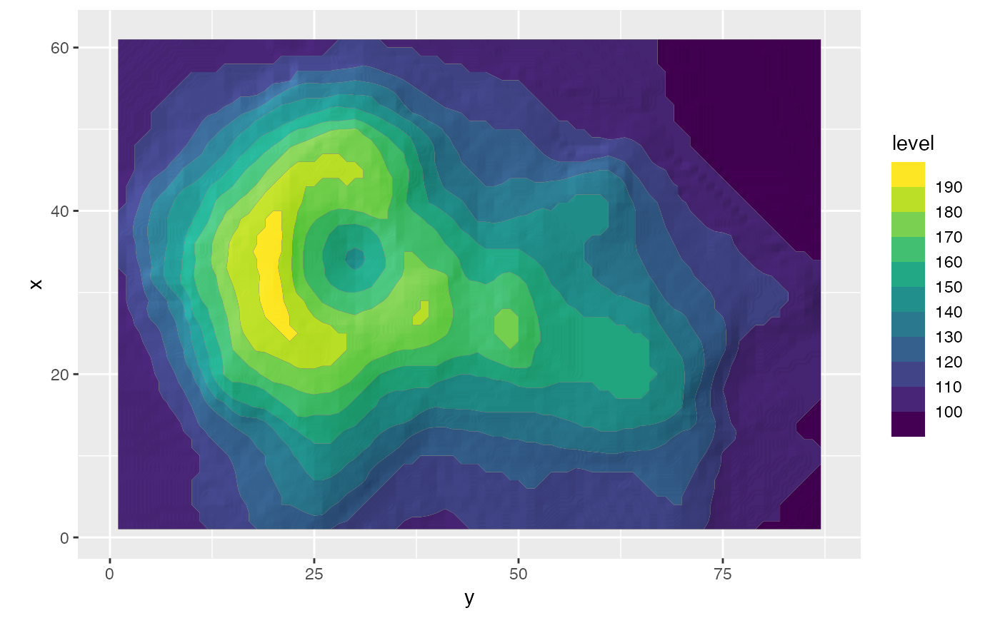

This filter adds a blur to the provided ggplot layer. The amount of blur can be controlled and the result can optionally be put underneath the original layer.
with_shade(
x,
height_map,
azimuth = 30,
elevation = 30,
strength = 10,
sigma = 0,
blend_type = "overlay",
...
)A ggplot2 layer object, a ggplot, a grob, or a character string naming a filter
The layer to use as a height_map. Can either be a string identifying a registered filter, or a raster object. Will by default extract the luminosity of the layer and use that as mask. To pick another channel use one of the channel specification function.
The location of the light source.
The strength of the shading. A numeric larger or equal to 1
The sigma used for blurring the shading before applying it.
Setting it to 0 turns off blurring. Using a high strength may reveal
artefacts in the calculated shading, especially if the height_map is
low-detail. Adding a slight blur may remove some of those artefacts.
A blend type as used in with_blend() for adding the
calculated shading to the layer. Should generally be left as-is
Arguments to be passed on to methods. See the documentation of supported object for a description of object specific arguments.
Depending on the input, either a grob, Layer, list of Layers,
guide, or element object. Assume the output can be used in the same
context as the input.
library(ggplot2)
volcano_long <- data.frame(
x = as.vector(col(volcano)),
y = as.vector(row(volcano)),
z = as.vector(volcano)
)
ggplot(volcano_long, aes(y, x)) +
as_reference(
geom_raster(aes(alpha = z), fill = 'black', interpolate = TRUE, show.legend = FALSE),
id = 'height_map'
) +
with_shade(
geom_contour_filled(aes(z = z, fill = after_stat(level))),
height_map = ch_alpha('height_map'),
azimuth = 150,
height = 5,
sigma = 10
) +
coord_fixed() +
guides(fill = guide_coloursteps(barheight = 10))
